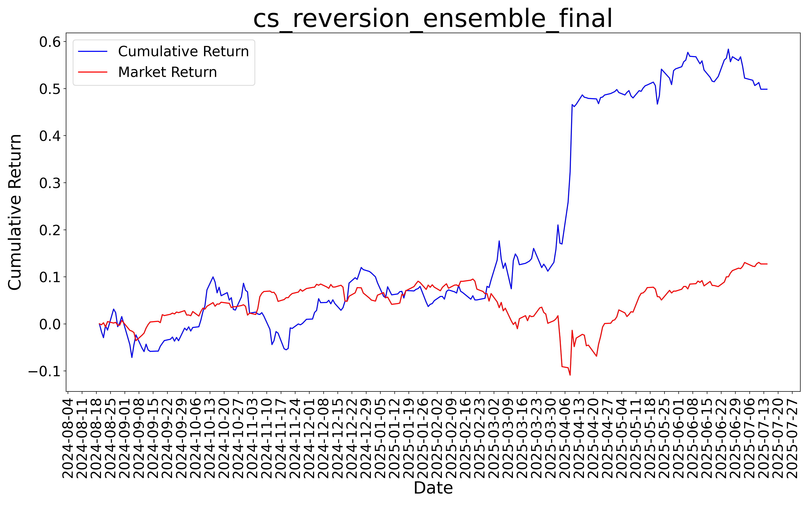
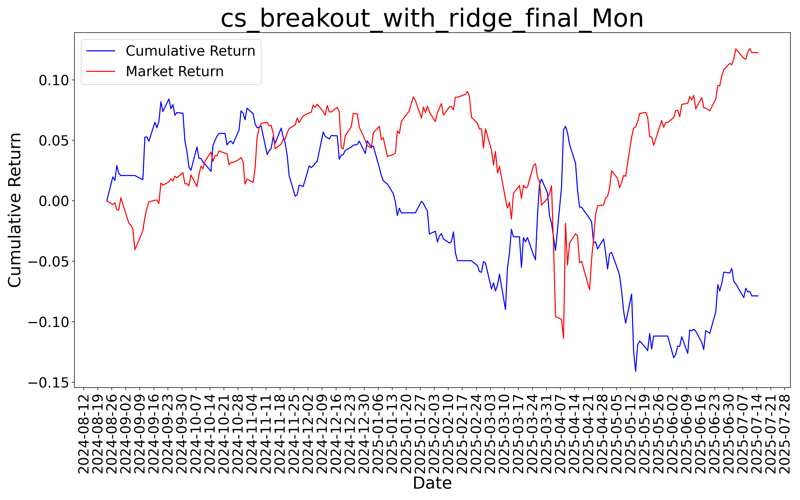
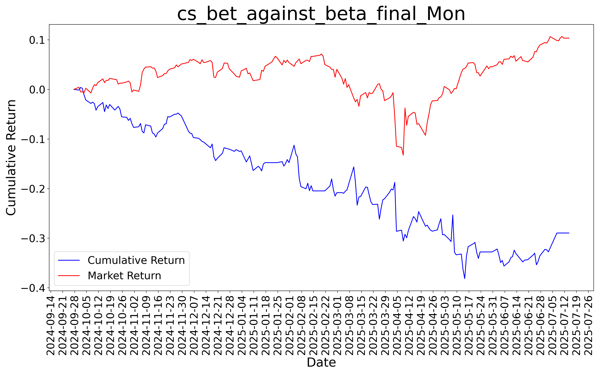
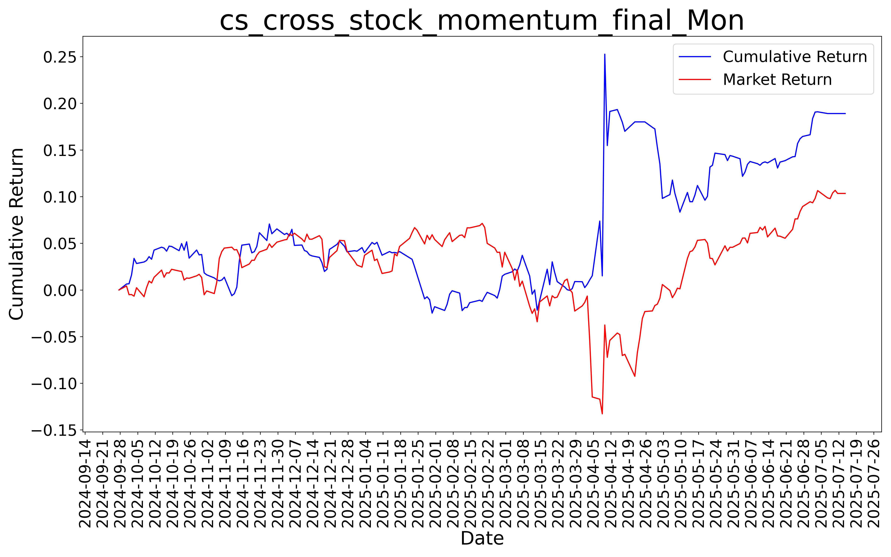

FNTF
Home
About Us
Contact Us
FNTF
AI-Backed Quantitative Research and Trading
FNTF builds robust equity trading signals for diverse market conditions
Fully Systematic, Mid-Frequency, Market Neutral, Long/Short
 
 